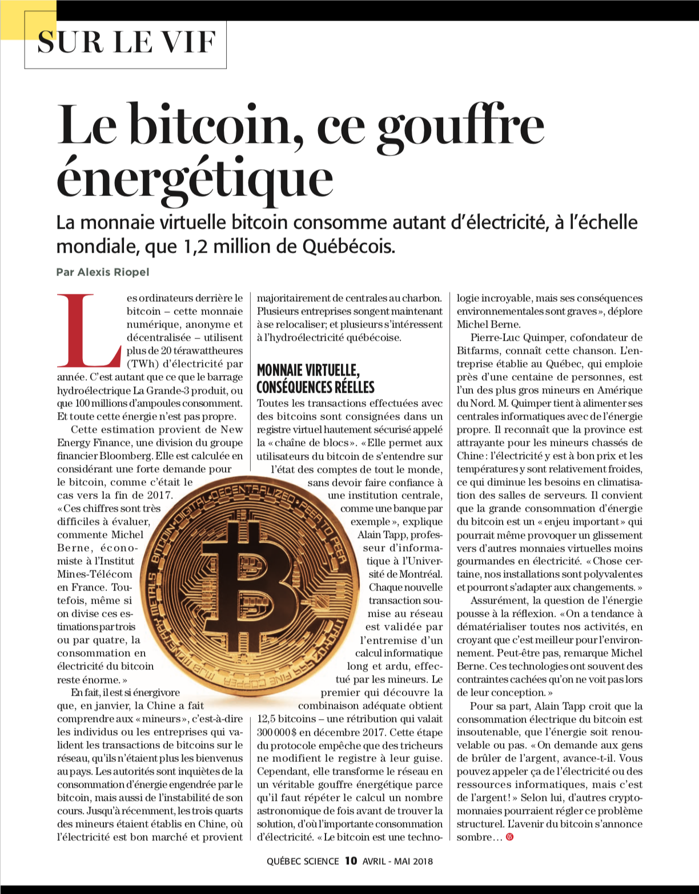
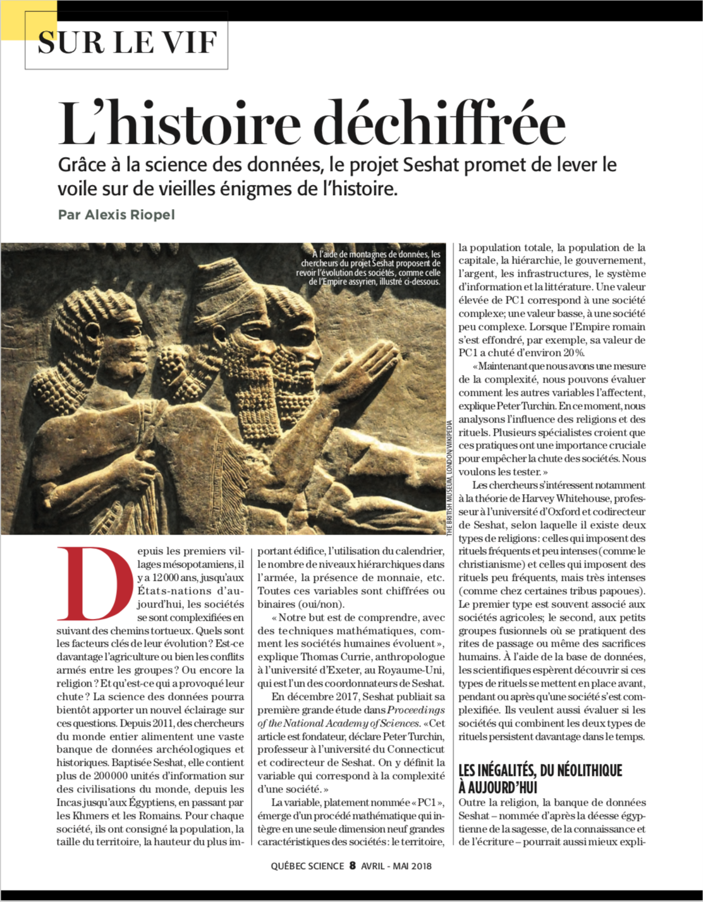
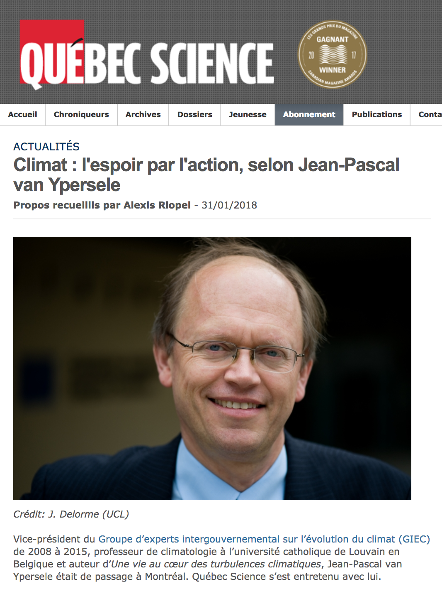
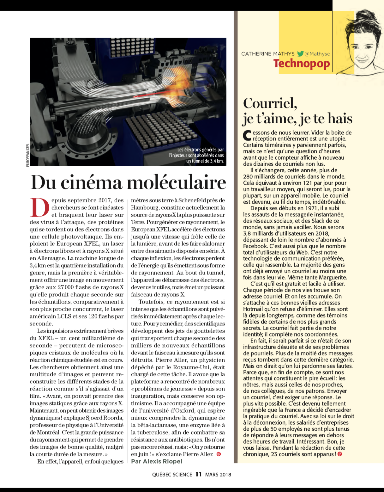
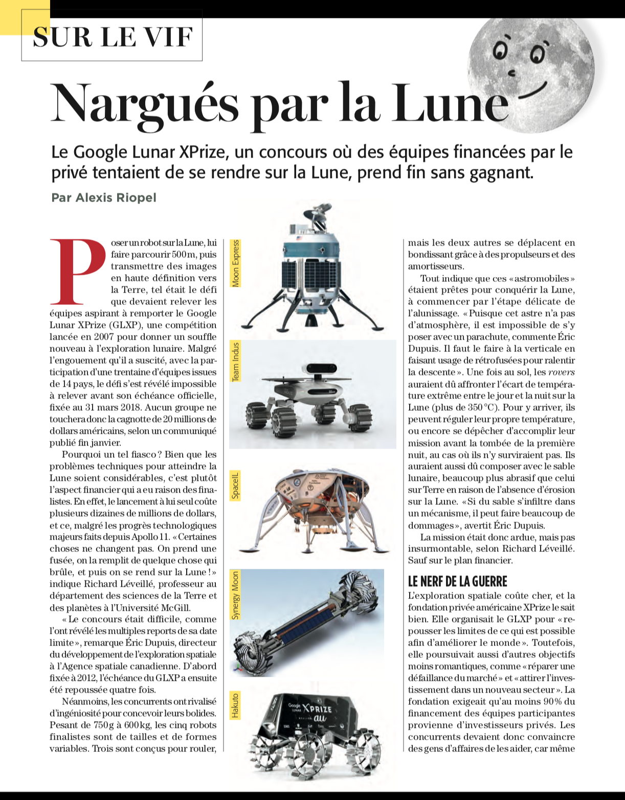

Alexis Riopel
riopelalexis [arobas] gmail.com
Mémoire de maîtrise
Curriculum vitæ
Portfolio
Le Monde
La Presse
Radio-Canada
Québec Science
Autres
Photos
Portraits
Pérou, Bolivie et Chili
Nouvelle-Zélande

Québec Science — avril-mai 2018

Québec Science — avril-mai 2018

Québec Science — 31 janvier 2018

Québec Science — mars 2018

Québec Science — mars 2018